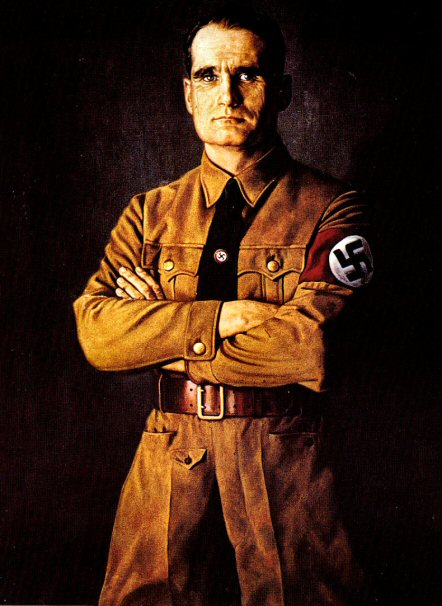
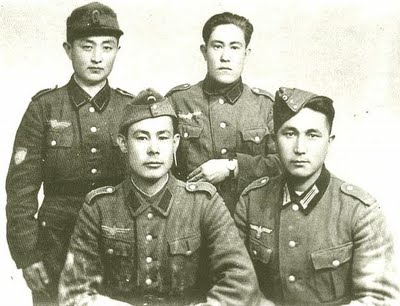
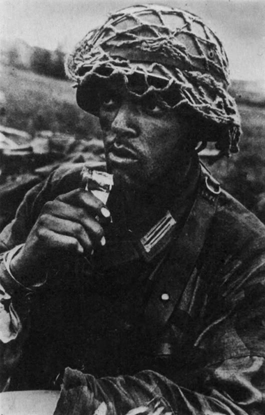
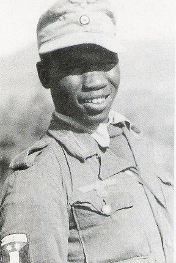

Indian Troops Who Fought in Hitler's Forces.
“Prime Minister Neville Chamberlain said to U.S. ambassador Joseph Kennedy that the reason why he had made war against Germany was that "America [MY NOTE* Jewish controlled] and the World Jews" had pressured him. Kennedy later told this to Admiral James Forrestal, who recorded it in his diary; "neither the French nor the British would have made Poland a cause of war if it had not been for the constant needling from Washington," is how Forrestal summarized Kennedy's recollection [The Forrestal Diaries, entry of 27 December 1945].
If Hitler was the monster the Jews lie and say he was, he might have won the war. Hitler showed mercy on the entire British Army at Dunkirk and personally ordered his generals to stop the attack and allow the English to leave. Hitler spared his enemies where he could have killed them all. Previous and still, Hitler had worked around the clock to obtain peace with England. Many Gentiles in England including members of the Royal family and even the famed T. E. Laurence of "Arabia" himself was a pro-Nazi. Laurence was murdered on his way to an important meeting to help bring a peace treaty with Germany before the war.
"Hess was murdered by the Jews to 'tie up loose ends' and remove anyone who might still be alive to tell the truth."
And of course the Holohoax is a lie:
Hitler also forbade the use of chemical weapons and did not allow the creation of nuclear weapons, as he was disgusted and aghast at such a thing. Hitler was a combat soldier at the front [highly decorated for bravery] for the entire Great War and knew first hand what such Jewish [the creator of Gas weapons was a Jewish chemist] created weapons were like. He, like millions of men experienced being wounded by such weapons. The creators of Atomic weapons were all Jews.
Below is a partial list of Jews who were directly involved in the Manhattan Project. There were many more Jews involved at all levels of researching, constructing, and advocating the use of the atomic bomb than can be listed here.
The first atomic bomb was designed and constructed in Los Alamos, New Mexico. The top-secret code name given to this working was "The Manhattan Project." The reason for the name was that Bernard Baruch [Jew], lived in Manhattan New York, as did many of the other top officials. The chief scientist of the Los Alamos Laboratory from 1943 to 1945 was J. Robert Oppenheimer, another prominent Jew. Oppenheimer's brother Frank, a card-carrying communist, was also a leading atomic scientist working at Los Alamos.
For more information: A Jewish Gift to Humanity: The Nuclear Nightmare
Japan was already going to surrender to the Allies, so there was no need to use Atomic weapons on them. It was Talmudic hatred for Gentiles, and nothing more. It was Jewish dominated politicking in America that had forced Japan into war on purpose in the first place by placing embargoes on Japan that would have left Japan impoverished and starving. The Jews committed a real holocaust on Japan because they also wanted to test their new Atomic weapons on a real Goyim population.
The reason America entered into the War was by that time, the Jewish elite were in control of its vital networks and did everything to force America into the War. Under crypto-Jew Roosevelt [of Dutch-Jewish ancestry], and his staff which reads like a synagogue list, Roosevelt in a telegram to the French Premier Reynaud on June 15 1940, promised to double American aid to France on the condition it continue the war against Germany. In December 1939, an American warship the Tuscaloosa maneuvered a German passenger vessel, the Columbus in to the hands of the British Navy while in a security zone, of which was scuttled by the Germans. In January 1940, the American warship Treton, in violation of international law, reported the movements of the German merchant ships Arauca, LaPlata and Wangoi to enemy naval forces. On June 27 1940, Roosevelt announced a limitation on the free movement of foreign merchant [Axis] vessels in American ports, which is also in violation of international law. In November of the same year, Roosevelt allowed for American warships to chase the German merchant ships Phrygia, Idarwald and Rhein, which resulted in all three ships scuttling themselves to avoid capture. This and its identical acts were all acts of aggression against Germany: helping enemy nations to attack their ships and citizens.
Roosevelt also sent the OSS Chief colonel Donovan to incite uprisings against Germany and Italy in Sofia and Belgrade.
Roosevelt then permitted American citizens to join the RAF while openly training RAF personnel in America. In September of 1940, Roosevelt transferred fifty American destroyers to the British Navy. In March 1941, Roosevelt imposed the Lend-Lease Act on America, which meant as President he could officiallly furnish as much aid as he wanted to [at the tax payers expense] that he felt it was in American's interest to defend such as the Soviet Jewion. This aid was the major reason the Red Beast was able to survive in the early part of the Eastern war.
Roosevelt had also worked to prevent other nations from making peace or having any peaceful relations with Germany, using economic policy as weapon against them. In 1940, he froze all Norwegian and Danish assets, despite the fact that Germany had not, nor had the plan the loot or dictate financial policy to either nation. Later Belgian assets in America where also "frozen" [frozen=stolen] with Roosevelt recognizing nonsense panels of exiles from such nations as governments in exile, an act of blatant hostility towards Axis Europe. Roosevelt's actions from even before the war showed he incited warfare on nearly every level against the National Socialist Nation in Europe.
On April 13 1941, American ships were permitted to pass freely through the Red Sea to supply British armies fighting in the Middle East. In March of the same year, the Americans began to openly confiscate all the German ships they could, while treating German citizens once again, in violation of international law like prisoners. In another indictment, two German officers that escaped from Canadian custody and fled to America, in violation of international law, were returned chained back into Canada, which was at war with Germany. At the same time, American naval ships began to increase patrols in the Western Atlantic reporting any observations to the British Navy, on Axis ships, military or civilian, while repairing British naval ships in US ports. In May, Norwegian vessels working for the British were openly armed and repaired in American ports, in violation of international law. In June, America troops arrived in Greenland to begin building military air bases. Then on the 9th of the same month, was a report from the British that Roosevelt had ordered an American warship to openly attack a German submarine off Greenland. Then German assets in violation of international law in the same month in America were officially frozen. Around the same time, Roosevelt ordered the recall of the German Consuls and called for the closing of the German Press Agency "Transocean," the German library of information in New York as well as the German National Rail Office [Reichbahn].
In July of 1941, American armed forces under Roosevelt's orders occupied Greenland, which is in an area of German military operations, in an attempt to force Germany into a war with America and to influence the outcome of German U-boat operations, against Germany's favor. In addition to this, on July 10 1941, America Navy Secretary Frank Knox ordered that all American warships were officially ordered to fire on all Axis vessels. That was another act of aggression and indirect declaration of open war against Germany by the American government. In September of that year, the US Warship Greer joined British warships in attacking German submarines in the Atlantic, soon after a German submarine identified American warships acting as open military escorts for British convoys.
Roosevelt openly admitted in a speech given on September 11 1941, that he had personally given the order for American warships to fire on all Axis vessels and had repeatedly given this order. On the 29th of the same month, American warship patrols attacked a German submarine off the coast of Greenland. On October 17, the American warship Kearny, acting on this order attacked another German submarine. In November of the same year, American warships in violation of international law captured the German ship Odenwald, took it to an American port, and imprisoned the crew.
The American Government and its Jewish controllers had privately declared war on Germany for years. The same methods where used against Japan to force them into a war as well. It is no secret the US government knew about Pearl Harbor for months in advance and did nothing, as they wanted an official reason to do what they had been doing all along.
"This war thrusts us years back in our constructive work. It is deplorable. I have not indeed become the Chancellor of the Greater German Reich in order to conduct war!"
– Adolf Hitler 1940

Rudolf Hess- Martyr for Peace
Rudolf Hess also made a fateful mission to Britain in 1941 to meet with the Pro-Peace members of the English Nobility and Government and bring Peace between the two Nations, where he was captured by the kosher Churchill's secret police and spent the rest of his life in a solitary prison cell:
"Hess was a prominent figure in Nazi Germany, acting as Adolf Hitler's deputy in the Nazi Party. On the eve of war with the Soviet Union, he flew to Scotland in an attempt to negotiate peace, but was arrested. He was tried at Nuremberg and sentenced to life in prison where he died [was murdered] in 1987."
"My coming to England in this way is, as I realize, so unusual that nobody will easily understand it. I was confronted by a very hard decision. I do not think I could have arrived at my final choice unless I had continually kept before my eyes the vision of an endless line of children's coffins with weeping mothers behind them, both English and German, and another line of coffins of mothers with mourning children."
– Rudolf Hess Statement of 10 June 1941, as quoted in Rudolf Hess: Prisoner of Peace [1982] by Ilse Hess [his wife].
"I was suspicious for several reasons... after all; Hess who had been held in Spandau for almost 30 years was by then 93-years-old and fragile. I doubted he had the strength to kill himself with a cord which was not attached at both ends to anything."
– Lt. Col. Eugene K. Bird on the death of Hess, to a Deutsche Presse-Agentur reporter, as quoted in "Former governor of Spandau Prison dies in Berlin" in Expatica [7 November 2005]
The REAL Holocaust
Holocaust Denial Videos
Cole in Auschwitz 1 of 7
Even a JEW admits and proves the "holocaust" is a LIE!
Auschwitz - Why The Gas Chambers Are A Hoax
As can be seen in the photo, neither women nor children were spared by the Polish death squads. This is what the German army went into Poland to put an end to, after numerous appeals for peace were ignored, which revealed Jewry instigating such events that caused the war.
Poland and More Jewish Hate
The same Jews placed international embargoes on Germany during the 1930's- see Judea Declares War on Germany/Freedman confessions: would have left 1/3rd of the German people in starvation. Even then Germany did not go to war until Hitler had no choice but to invade Poland to stop the genocide of the ethnic German populace. Around 20,000 to 50,000 innocent people were murdered by Jewish-created and backed Haitian-style murder squads, and that was after Hitler had warned Poland to stop and appealed to the League of Nations, the UN of the day, to do something. The Bromberg massacre was the final straw. Thousands of Germans were massacred, literally Rwandan style.
Hitler's invasion of Poland was to end the genocide of thousands of innocent people by force, as appeals to reason and compassion had failed. Churchill, the Jew puppet who's mother was a Jewess as even reported by the Jerusalem Post, from 1936 was being funded by a group of mainly Jewish bankers, former politicians and industrialists called "The Focus Group" and was given a huge amount of money by the Jewish Chairman of the Shell company in July of that year. He made a secret deal with the Polish government. They were to force Germany into attacking by any means and then England and France could declare war and appear to be the morally righteous side. This was to open a two front war between Poland in the East, and France, and England in the West, which was to defeat Germany, as the Polish Army alone out-numbered the German one. Key areas of Polish society had no doubt been subverted by Jewry as well by this point.
"Lord Nathan Rothschild was the most powerful man in Britain."
– British Prime Minister Lloyd George
The British Empire had been under Jewish control for a century by this point with the Jewish Banking Dynasties. Many such Jews had also become part of the British Nobility, such as the Rothschilds:
"The Rothschild family. The British branch of the family was elevated into the British nobility at the request of Queen Victoria. It has been argued that during the 19th century, the family possessed by far the largest private fortune in the world, and by far the largest fortune in modern world history," even having the Jews in control of the British Government directly such as Disraeli:
"Benjamin Disraeli, 1st Earl of Beaconsfield, KG, PC, FRS, [21 December 1804 ¨C 19 April 1881] was a British Prime Minister, parliamentarian, Conservative statesman, and literary figure. He started from comparatively humble origins. He served in government for three decades, twice as Prime Minister of the United Kingdom. Although his father had him baptized to Anglicanism at age 12, he was nonetheless Britain's first and thus far only Prime Minister who was born into a Jewish family– originally from Italy."
They did not count on the fact Hitler was a genius who had created a modern Army and lighting war tactics, hence why Poland and then France both fell within two weeks each. Even then, after what the wicked Jews had done to the Germans and Europe, Hitler still asked for and gave fair terms in friendship, not as a conqueror. France agreed with the Vichy Nationalist Government but England refused. Poland remained under occupation given what had happened. Poland had already invaded Germany several times before in the Weimar period, but they were treated with respect under Hitler's direct orders there were no revenge actions taken towards the Polish populace for Bromberg.
The Soviet Jewion, which had attacked from the East, taking full advantage of the situation for a power grab did however commit genocide on the Polish population, the most famous example being Katyn massacre:
"The Katyn massacre, also known as the Katyn Forest massacre, was a mass execution of Polish nationals carried out by the Soviet secret police NKVD in April ¨C May 1940. It was based on Lavrenty Beria's proposal to execute all members of the Polish Officer Corps, dated 5 March 1940. This official document was then approved and signed by the Soviet Politburo, including its leader, Joseph Stalin. The number of victims is estimated at about 22,000, the most commonly cited number being 21,768. The victims were murdered in the Katyn Forest in Russia, the Kalinin and Kharkov prisons, and elsewhere. About 8,000 were officers taken prisoner during the 1939 Soviet invasion of Poland, the rest being Polish doctors, professors, lawmakers, police officers, and other public servants arrested for allegedly being "intelligence agents, gendarmes, landowners, saboteurs, factory owners, lawyers, officials, and priests." Since Poland's conscription system required every unexempted university graduate to become a reserve officer, the NKVD was able to round up much of the Polish intelligentsia."
The Battle of Britain began in defense against Kosher Churchill's sending bombers across the English Channel to bomb German cities and towns FIRST. Hitler warned him to stop such actions. Churchill refused and after several more times, Hitler sent the German Air Force across the channel and then only to bomb the British Air Forces' bases to cripple Kosher Churchill and Harris RAF terror bombers from attacking any more German civilian centers. During a night attack, one of the German bombers thinking they were over the channel already, dropped their excess bombs in order to have enough fuel left to make it back home. Sadly, they were over a British City but since the blackouts were in effect, they had no way of knowing. They worked to avoid any civilian causalities to the point that there were under twenty one thousand for the entire battle, even when they were in the position where they could have leveled half of England. This was after Hitler had bent over backwards trying to make Peace with England from the 1930's and on, as already mentioned, even sparing the entire English Army at Dunkirk.
The Hidden Part of the Air War– Talmudic Protocols In Action:
"February 13/14 1945: Holocaust over Dresden, known as the Florence of the North. Dresden was a hospital city for wounded soldiers. Not one military unit, not one anti-aircraft battery was deployed in the city. Together with the 600,000 refugees from Breslau, Dresden was filled with nearly 1.2 million people. Churchill had asked for "suggestions how to blaze 600,000 refugee." He wasn't interested how to target military installations 60 miles outside of Dresden. More than 700,000 phosphorus bombs were dropped on 1.2 million people, one bomb for every two people. The temperature in the center of the city reached 1600 degrees centigrade. More than 260,000 bodies and residues of bodies were counted, but those who perished in the center of the city could not be traced. Approximately 500,000 children, women, the elderly, wounded soldiers, and the animals in the zoo were slaughtered in one night."
"In fact, little had been done to provide the ancient city of artists and craftsmen with anti-aircraft defenses. One squadron of planes had been stationed in Dresden for a while, but the Luftwaffe decided to move the aircraft to another area where they would be of use. A gentlemen's agreement seemed to prevail, designating Dresden an "open city."
This provided the Jews with another easy opportunity to mass murder as many innocent people as possible. A hundred thousand people died in the first twenty minutes of the attack.
One eyewitness who survived told of seeing "young women carrying babies running up and down the streets, their dresses and hair on fire, screaming until they fell down, or the collapsing buildings fell on top of them." As the German government stated after the attack: "Dresden had no war industries, it was a place of culture and clinics."
"What distinguished this raid was the cold-blooded ruthlessness in which it was carried out. U.S. Mustangs appeared low over the city, strafing anything that moved, including a column of rescue vehicles rushing to the city to evacuate survivors. One assault was aimed at the banks of the Elbe River, where refugees had huddled during the horrible night.
"Dresden's citizens barely had time to reach their shelters. The first bomb fell at 10:09 p.m. The attack lasted 24 minutes, leaving the inner city a raging sea of fire. "Precision saturation bombing" had created the desired firestorm.
There was a three-hour pause between the first and second raids. The lull had been calculated to lure civilians from their shelters into the open again. To escape the flames, tens of thousands of civilians had crowded into the Grosser Garten, a magnificent park, nearly one and a half miles square.
The second raid came at 1:22 a.m. with no warning. Twice as many bombers returned with a massive load of incendiary bombs. The second wave was designed to spread the raging firestorm into the Grosser Garten. It was a complete "success." Within a few minutes, a sheet of flame ripped across the grass, uprooting trees and littering the branches of others with everything from bicycles to human limbs. For days afterward, they remained bizarrely strewn about as grim reminders of Allied sadism."
At the start of the second air assault, many were still huddled in tunnels and cellars, waiting for the fires of the first attack to die down. At 1:30 a.m., an ominous rumble reached the ears of the commander of a Labor Service convoy sent into the city on a rescue mission. He described it this way:
"The detonation shook the cellar walls. The sound of the explosions mingled with a new, stranger sound which seemed to come closer and closer, the sound of a thundering waterfall; it was the sound of the mighty tornado howling in the inner city."
"Others hiding below ground died, but they died painlessly – they simply glowed bright orange and blue in the darkness. As the heat intensified, they either disintegrated into cinders or melted into a thick liquid – often three or four feet deep in spots. Shortly after 10:30 on the morning of February 14, the last raid swept over the city. American bombers pounded the rubble that had been Dresden for a steady 38 minutes, but this attack was not nearly as heavy as the first two.
In the last year of the war, Dresden had become a hospital town. During the previous night's massacre, heroic nurses had dragged thousands of crippled patients to the Elbe. The low-flying Mustangs machine-gunned those helpless patients, as well as thousands of old men, women, and children who had escaped the city. When the last plane left the sky, Dresden was a scorched ruin, its blackened streets filled with corpses. The city was spared no horror. A flock of vultures escaped from the zoo and fattened on the carnage. Rats swarmed over the piles of corpses.
A Swiss citizen described his visit to Dresden two weeks after the raid: "I could see torn-off arms and legs, mutilated torsos and heads which had been wrenched from their bodies and rolled away. In places the corpses were still lying so densely that I had to clear a path through them in order not to tread on arms and legs."
Kurt Vonnegut was an American POW being held in Dresden when it was bombed in 1945, and wrote a famous anti-war novel, "Slaughterhouse Five" [named after the area he took refuge in to survive the bombing of the city]. He stated after the attack, that the city looked like the "surface of the moon."
"In December 1944, Vonnegut was captured by the German army and became a prisoner of war. In Slaughterhouse Five, he described how he narrowly escaped death a few months later in the firebombing of Dresden. "Yes, by your people [the English], may I say," he insists, "You guys burnt the place down, turned it into a single column of flame. More people died there in the firestorm, in that one big flame, than died in Hiroshima and Nagasaki combined. I'm fond of your people, on occasion, but I was just thinking about 'Bomber Harris, who believed in attacks on civilian populations to make them give up. A hell of a lot of Royal Air Force guys were ashamed of what Harris had made them do. And that's really sportsmanship and, of course, the Brits are famous for being good sports," [Note* "Harris" is a Jewish name].
As one RAF member who took part in the attack stated afterwards, "I found myself making comments to the crew: "Oh God, those poor people." It was completely uncalled for. You can't justify it."
Here is an example of a minor RAF raid:
"During the latter stages of World War II, Pforzheim, a town in southwestern Germany, was bombed a number of times. The largest raid and one of the most devastating area bombardments of the war was carried out by the Royal Air Force [RAF] on the evening of February 23, 1945. As many as 17,600 people, or 31.4% of the town's population, were killed in the air raid. About 83% of the town's buildings were destroyed, two-thirds of the complete area of Pforzheim and between 80 and 100% of the inner city."
The RAF Bomber or Arial Genocide Force took some of the highest death rates of any service in the war for Britain. Because the Germans fought so desperately against the terror bombing strikes on their people, German Fighter Pilots would crash their burning shot apart fighters along with themselves into a RAF Bomber just to stop one more of them from being able to murder anymore of their people. It was that horrific of a situation.
The Situation in the East– Jewish Aggression on Display:
Hitler knew that fighting a defensive war against the Red Army was suicide, as they would be facing up to 30 million troops, thousands of tanks, planes and heavy guns. If the Red Army was not struck while still mobilizing for their invasion, Western Europe was doomed. Jewry was playing their big Red Hand, as they were the Soviet Jewion. Even Stalin was a Yid. His real name `Dzhugashvili' in Georgian means "Son of a Jew."
The Eastern Struggle– Jewish Aggression on Display:
The invasion of the Soviet Union was done after German intelligence informed them with the overwhelming evidence that the Soviet Jewion was planning to attack them in the spring of 1941, and yes, the entire Red Army was mobilizing on the borders. It was too large to be exercised alone. It was an invasion force. Operation Sea Lion, the invasion of England was nothing more then a ruse to distract the Soviets from the fact they knew and were preparing a first survival strike.
German Chief of Staff Franz Halder, stated, "Russia was preparing for an attack on Germany" "We know today from good sources that he [Hitler] was right about that."
At Nuremberg General Winter testified under oath: "We had at the time the subjective impression that we were striking into an offensive deployment in progress."
Senior-General Jodl is on record stating that Hitler never even mentioned the ideal of Lebensraum in 1940 when the discussion on a preemptive war with the Soviet Jewion came up. This is an open statement to the damning fact of how much the Jewish lie machine has worked to rewrite history. The war was defensive not ideological on their part, as stated by Senior-General Jodl who testified at Nuremberg:
"The Fuehrer has never named in my presence even just one hint of a reason other than the purely strategic."
Hitler by Jodl's testimony, made the following statements to him, many times over:
"There is no doubt now that England puts her hopes in this last mainland proxy; [my note Soviet Jewion] otherwise she would have already called off the war after Dunkirk. Agreements have certainly already been made. The Russian deployment is unmistakable. One day suddenly we shall be either coldly blackmailed or attacked."
Churchill in 1940 purposely rejected Germany's offer of peace and voted to keep the war going. Sir Stafford Cripp's meeting with the Soviets in Moscow– they had promised the Soviet Jewion was going to come into the war on Britain's side.
The War started because the Jews incited it. The Axis Army was welcomed as a "liberator" across the Eastern Nations. Jewish rule under Communism, had already murdered over 20 million innocent Gentiles. Seven million died in the Ukrainian holocaust alone which was overseen by the Jew Lazar Moiseyevich Kaganovich on orders from the Jew Stalin. Millions more died in a system of death camps called Gulags, each run by a Jewish Commissar. The Jews just worked them to death on purpose as shooting them was too quick.
This one contained the bodies of up to ten thousand victims, all murdered by the Jewish NKVD at Vinnitsa.
The Real Death Camps and Holocaust
On the camps from survivors:
"The central aim was to kill off the prisoners as one commandant put it quite openly.”
"If you complain or write anything [Heaven forbid], they will frame you for an attempted escape or for something else, and they will shoot you like a dog. They [the Jews] line us up naked and barefoot at 22 degrees below zero and keep us outside for up to an hour. It is difficult to describe all the chaos and terror that is going on in Kemi, Solovky, and the other sections of the concentration camps...they forced inmates to eat their own feces."
Tens of millions of innocent Gentiles died in those Jewish run camps. The Jew being the Master of Projection, lied, and took what they did to the Gentiles in the Gulags, and claimed it was what the Germans did to them!
In fact, reading the reports and letters of the Axis soldiers of the first waves going into the former Communist controlled areas, it was the citizens themselves who were rounding up and punishing the Jews in general, as they all knew the Commissars were local Jews and even anti-Semitism was literally the death penalty under the Reds. The Kosher NKVD before running away had rounded up any Gentile they could and brutally murdered them in droves with everything from axes to bullets in pure Talmudic vile. When the family members found the bodies stacked like wood in the courtyards, and as mentioned, they knew it was the Jews, so they took revenge. It was the Axis troops that ended the Pogroms, not started them. Unlike the kosher claims, and yes, all Commissars given the disgusting crimes against humanity, the Axis troops had found they were committing, were ordered to be shot on site.
The so-called "Partisans" in the East as in the West were actually all Jews, especially in the beginning. The Western branch of the resistance [red terror] movements like the famed "French Resistance" was almost to a person, all Jewish. Hence why the Axis had to round up and imprison every Jew they could find, as they knew the Jews were working against them as a terrorist racial collective behind the lines and at the front. Axis Europe was fighting for its life at this point.
With the opening of the KGB archives, it was discovered that the Russian populations living in the Axis liberated territories worked in full cooperation with the Germans against the Jewish Red Beast. These people had lived under the Red Heel and had lost many loved ones to it. Contrary to popular belief, there never was a "Russian" revolution, but the White Russians [Nationalists] fighting desperately against an international Jewish take over of whom the Red armies were mainly armed with Jews from the Pale and abroad and tens of thousands of Chinese Mercenaries were bought and shipped from the East by the Jews and general dregs.
The Germans worked with the Russian communities [and other Eastern Europeans] and built them hospitals, new farms, homes, community centers and schools. They liberated numerous gulags, freed the prisoners, and helped restore them to health. They returned them to their homes and families and built a real spirit of friendship with them. In places like Ukraine as in Russia, they worked with the locals to help uncover mass graves of thousands of murdered innocents by the Jewish NKVD, helping to identify as many as possible and return them to their families for proper burials. When investigating the crimes and bringing any responsible who were still in the area to justice. As it turned out, 99.9% of those brought to justice all happened to be Jews. No surprise there. It was also found during the investigation that the killings of the populace by the Jewish led Reds were selective targeting of the best and brightest elements of the Gentile community. Upon their murders, any property they did have was given to the local Jewish populations. Right out of the Talmud.
The Germans helped to create in Russian and other Eastern Nations a new core of National Socialist Communities, which was Himmler's actual plan for the East if war did occur. The East was to be developed into a Slavic National Socialist State that would be part of a larger Pan-European Confederation, for the multi-cooperation, betterment, and protection of the common Indo-European cultures, peoples and nations.
Another event that the opening of the KGB achieves recorded was the majority of civilian deaths on the Eastern Front were literally mass liquidations of the Russian and other populaces executed by the Bolsheviks, as they knew the populaces where working with the Axis for their mutual liberation and freedom in the liberated areas. They sought to deny the Axis any material industrial, agricultural, or human. Their scorched earth policy was applied to the human populations as well. Entire areas where wiped clean of all life.
Millions of Eastern European Gentiles volunteered to fight against the Judeo-Bolsheviks and their Red Army in the East. 50,000 White Russians fought with the 6th Army at Stalingrad alone and they all fought to the end in that desperate battle.
Hundreds of thousands more Western and Central Europeans volunteered to help to fight in the Waffen SS alongside their Eastern Brethren against Judeo-Bolshevism on the Eastern front. They fought so fiercely even in the face of overwhelming odds. Kosher Stalin was begging his fellow Jews to open up a second front in the West. Only a tiny percent of the Waffen SS were German Nationals. The mass majority were Europeans from every free Nation in Europe. Even some English fought in the ranks.
Indian Troops Who Fought in Hitler's Forces. | Hitler had accomplished for the first time in known history what no other Man had ever done before. He had united European Nations and peoples to fight together as one against the Jewish monster in the East and the whole of global Jewry as well. Europeans had decided they wanted to be free and were fighting by the millions to be free from Jewry.Beyond that, even Indians, Blacks, Japanese, and Tibetan Gentile warriors fought in the Axis ranks as honored Gentile Brothers-in-Arms. It is a little known fact that Hitler and the Dali Lama were allies and thousands of dead Tibetans in German uniforms were pulled from the rubble of Berlin where they died fighting with thousands of other free Gentiles warriors. |

| 

| |

The famed Indian Nationalist Leader Subhas Chandra Bose met personally with both Hitler and Himmler and also spoke to large meetings of Axis leaders in Europe and was received by them as a hero. Bose went to the thousands of Indian POWs in German custody who where captured as part of the British Army in North Africa who had refused to break their oath of service to England. After speaking with them en mass and telling then the truth, thousands of Indians volunteered to fight for National Socialism and became National Socialists as Bose himself was in essence, and were treated as equals by the Germans. Bose even wanted to model important aspects of National Socialist Germany for the new Indian Nation he hoped to create. Today all across India there are thousands of murals devoted to Bose who is a celebrated hero; many murals depicted the iconic meeting of Bose with Hitler both shaking the other hand.
In the memoirs of a Black soldier who fought in the German Army, he wrote that in the American Army, Black soldiers were segregated and treated as second-class people. Where in the German Army, himself, and other Black troops lived side by side with the White soldiers, ate at the same mess tables and had the same rights and privileges, and were treated with equal respect to the White soldiers. National Socialism is built upon racial respect and common values of kin altruism.
National Socialism is Not Racist
The Jews have lied about Hitler and projected their vulgar racism onto him falsely.
Hitler's OWN statements on the subject of actual racialism:
"I promise you I am quite free from all racial hatred. It is, in my case, undesirable that one race should mix with other races. Except for a few gratuitous successes, which I am prepared to admit, systematic crossbreeding has never produced good results. Its desire to remain racially pure is proof of the vitality and good health of a race. Pride in one's own race – is also a normal and healthy sentiment. I have never regarded the Chinese or Japanese as being inferior to ourselves. They belong to ancient civilizations, and I admit freely that their past history is superior to our own. They have the right to be proud of their past, just as we have the right to be proud of the civilization to which we belong. Indeed, I believe the more steadfast the Chinese and the Japanese remain in their pride of race, the easier I shall find it to get on with them."
– Adolf Hitler
Hitler wanted each Gentile Race to preserve their own unique genetic line and culture and work to become the best people they could be in the Cosmos. That is real care for the healthy order of life, where the Jew wants to destroy it.
Waffen-SS General Leon Degrelle stated:
"German racialism meant re-discovering the creative values of their own race, re-discovering their culture. It was a search for excellence, a noble ideal. National Socialist racialism was not against the other races, it was for its own race. It aimed at defending and improving its race, and wished that all other races did the same for themselves...National Socialist racialism was loyal to the German race and totally respected all other races."
For a free pdf copy of this article, please click here